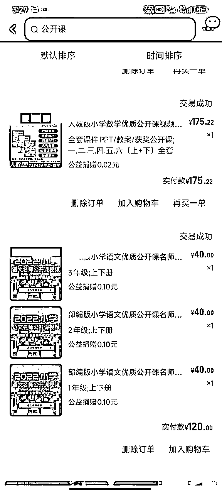
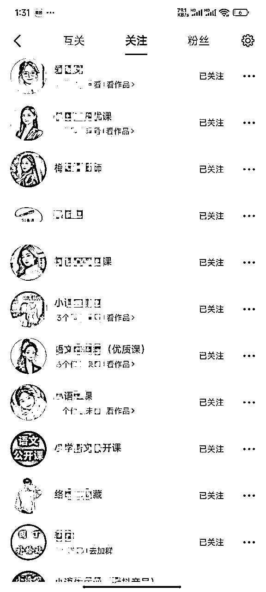
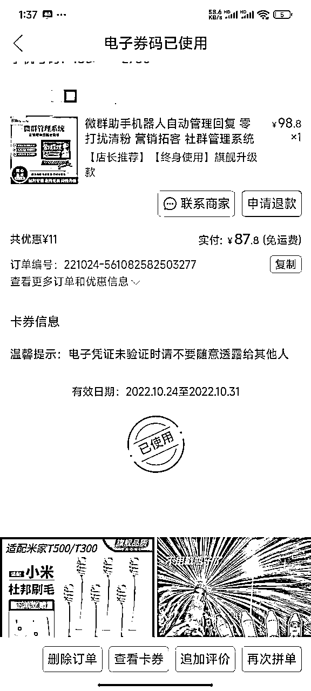
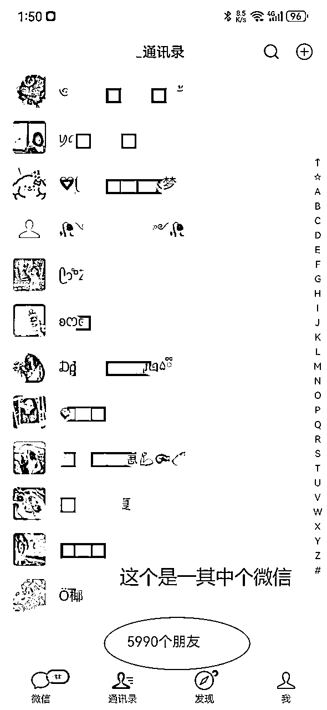

来源：https://higjmmrwjkh.feishu.cn/docx/LjvVdk8avoSC7GxW8OVcHOjZnJh
这个项目最初的起因很简单：我老婆是小学语文老师，有一天她让我帮她在淘宝买点资料。结果一搜，居然看到一个语文资料包要卖300多块钱。作为做过电商的人，我立马嗅到了“可复制”“高利润”的商机。于是我就随手给我老婆做了一个关于语文资料的视频，发到了一个刚注册不久的抖音号上。

当时我并没有关注这个视频的表现，因为那段时间炒股正赚得风生水起，根本看不上这种“小钱”。直到有一天炒股大亏、身无分文时，偶然发现抖音号上来了一个微信好友申请，几分钟后就成交了58元。这让我意识到，这门生意也许值得认真试一试。
我认真研究起同行，发现他们的视频内容简单粗暴，照样能出单。但我这边半年都没有转化，最后分析发现是新号权重低的问题。既然一个号不够，那就做多个号。于是我开始搭建矩阵账号，提升整体曝光量。

其中一个账号爆了，客户大量涌入。因为缺乏经验，我害怕错过客户，开始在视频里直接留微信号，结果很快被抖音检测到限流，账号流量归零。同时由于微信频繁收款加好友，也被封了号。这次让我深刻认识到平台规则的重要性。
起初团队由我、我老婆和我老婆的姐姐组成，分工是我做视频，我老婆选内容，她姐负责转化接待。由于我认为自己花时间少，就没有参与利润分成，分成比例是她们两个各50%。开始没问题，但后来账号爆了，她姐接待不过来，我老婆也得参与，却还是55开，结果心态不平衡，产生矛盾。虽然这波流量最终还是吃下来了，但团队明显出现裂痕。
这一年我彻底改变打法，不再参与直接销售，而是转型为指导者与系统搭建者：
随着业务扩张，原有资料明显不够用了：
我们从抖音扩展到：
平台多点开花，流量来源变得更加稳固。

各团队打法不同，却各自跑通了自己的模式。
这是一场从生活中挖掘机会、到系统打造闭环、再到及时收手的完整创业路径。值得每一个希望用副业破局的人参考。
虽然这个项目结束了，手里还有差不多1w老师微信还没有想到怎么变现。
如今，这个项目虽然已暂时告一段落，但我的资源和认知却在沉淀中升值。最关键的是：
所以接下来，我正在思考：
这批 稀缺、高信任、精准的资源，该如何进行二次变现？
无论是与教育机构合作课程、SaaS工具、教辅产品分销，还是为B端客户提供流量与私域运营服务，我都愿意敞开合作。
如果你：
欢迎联系我，一起探讨新的机会。
副业的价值不仅是赚钱，更是资源和认知的积累。当你能持续交付价值，机会自然会找上门来。
